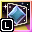
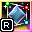

 Polygon Objects
1. General Description of Object
Polygon objects are those objects that have Quad Shader applied and from 4 points draw like a polygon. (These objects before were mistakenly called as "Fade" so in other examples .MFA may be called that).
Currently, at the time of writing this documentation, there is one type of this object, it is the Polygon Requiring Object.
This object requires that of the 4 Group.3D Objects on the screen (Or any other object), be used as points for the shader.
It is important to set the points properly so that the shader draws the polygon well.
The second type is Polygon Lonelty Object(This type is to be introduced in the future).
The difference of this type from Polygon Requiring Object is that it calculates the points on the screen by itself and can work without additional objects.
2. Variables
_PointX_A
Type: Numeric parameter.
Function:
Function: Variable used to set the point to the upper left corner of the shader polygon for the X axis
(Automatically calculated by Set Points and Other Varibles behavior).
Default value: 0.0 (Automatic)
_PointY_A
Type: Numeric parameter.
Function:
Function: Variable used to set the point to the upper left corner of the shader polygon for the Y axis
(Automatically calculated by Set Points and Other Varibles behavior).
Default value: 0.0 (Automatic)
_PointX_B
Type: Numeric parameter.
Function:
Function: Variable used to set the point to the upper right corner of the shader polygon for the X axis
(Automatically calculated by Set Points and Other Varibles behavior).
Default value: 0.0 (Automatic)
_PointY_B
Type: Numeric parameter.
Function:
Function: Variable used to set the point to the upper right corner of the shader polygon for the Y axis
(Automatically calculated by Set Points and Other Varibles behavior).
Default value: 0.0 (Automatic)
_PointX_C
Type: Numeric parameter.
Function:
Function: Variable used to set the point to the lower right corner of the shader polygon for the X axis
(Automatically calculated by Set Points and Other Varibles behavior).
Default value: 0.0 (Automatic)
_PointY_C
Type: Numeric parameter.
Function:
Function: Variable used to set the point to the lower right corner of the shader polygon for the Y axis
(Automatically calculated by Set Points and Other Varibles behavior).
Default value: 0.0 (Automatic)
_PointX_D
Type: Numeric parameter.
Function:
Function: Variable used to set the point to the lower left corner of the shader polygon for the X axis
(Automatically calculated by Set Points and Other Varibles behavior).
Default value: 0.0 (Automatic)
_PointY_D
Type: Numeric parameter.
Function:
Function: Variable used to set the point to the lower left corner of the shader polygon for the Y axis
(Automatically calculated by Set Points and Other Varibles behavior).
Default value: 0.0 (Automatic)
_LayerOffset
Type: Numeric parameter.
Function: This variable specifies the layer offset: negative values allow the object to render behind objects behind it, and positive values allow it to render above objects in front of it.
Default value: 0.0
_Layer
Type: Numeric parameter.
Function: This variable is automatically calculated by the Set Points and Other Varibles behavior; it determines the current layer of the object for the 
Layer Object.
Default value: 0 (Automatic)
_FixValue
Type: Numeric parameter.
Function: Adds an offset multiplied by 1e-05 for the shader's xD and yD variable.
(Improving graphics artifacts in the shader).
Default value: 1.0
_Active
Type: Bool parameter.
Function:This flag determines whether to set and adjust the object to fill it on the screen, this happens when the flag is for False, it is automatically set to True.
Default value: False
_Visibility_A
Type: Bool parameter.
Function:This variable indicates the visibility of the point in the upper left corner of the polygon.
Default value: False (Automatic)
_Visibility_B
Type: Bool parameter.
Function:This variable indicates the visibility of the point in the upper right corner of the polygon.
Default value: False (Automatic)
_Visibility_C
Type: Bool parameter.
Function:This variable indicates the visibility of the point in the lower right corner of the polygon.
Default value: False (Automatic)
_Visibility_D
Type: Bool parameter.
Function:This variable indicates the visibility of the point in the lower left corner of the polygon.
Default value: False (Automatic)
_IgnoreShowing
Type: Bool parameter.
Function: This flag sets whether the automatic visibility of the object on the screen should be disabled.
Default value: False
3. Behaviors
3.1. Details: Startup in Polygon Requiring Objects
This behavior changes the position of this object to the center of the screen as well as fills the entire screen. This activates when the _Active flag is set to False.
True after that.
This behavior also disables the visibility of the object if 
_API has CPU text, DirectDraw or Direct3D8.
3.2. Details: Set Points and Other Varibles in Polygon Requiring Objects
This behavior is responsible for setting the _PointX_A,
_PointY_A,
_Visibility_A,
_PointX_B,
_PointY_B,
_Visibility_B,
_PointX_C,
_PointY_C,
_Visibility_C,
_PointX_D,
_PointY_D,
_Visibility_D and
_Layer variables of the objects specified in it in this behavior.
3.3. Details: Set Shader Varibles in Polygon Requiring Objects
This behavior is responsible for setting values from this object to shader values.
3.4. Details: Set Visibility in Polygon Requiring Objects
This behavior modifies the visibility of the object in the dependency by calculating
_Visibility_A
* _Visibility_B
* _Visibility_C
* _Visibility_D and the _IgnoreShowing flag.